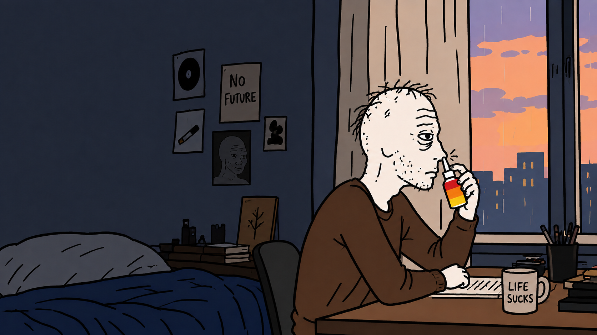

KYS / JNJ
PAIR
KYS trades directly against JNJ stock exposure.
01
SPRAVATO® is a prescription antidepressant nasal spray from Johnson & Johnson. Keep Yourself Safe is a reminder that there is always a way forward. Log off. Call a friend. Talk to a professional. KYS pairs with JNJ stock, with 1/1 of protocol fees routed into JNJ distributions for eligible KYS holders.
Popularity is shown with reported sales and cumulative patient figures. *Market share is an estimate based on 2025 sales and a third-party global market benchmark. KYS is independent and is not affiliated with or endorsed by Johnson & Johnson or SPRAVATO®.
Depression is a real medical condition. It deserves care, attention, and qualified professional support.
Treatment-resistant depression is real. When earlier treatments haven’t helped enough, a healthcare professional can discuss other options.
Asking for help is not capitulation. If you’re struggling, tell someone you trust and contact a qualified healthcare professional.
The chart is not more important than you are. Log off. Call a friend. Keep yourself safe.
KYS trades against JNJ stock. Every 1/1 of protocol fees flows back into JNJ stock exposure distributed to eligible KYS holders.
KYS trades directly against JNJ stock exposure.
01100% of protocol fees are routed into JNJ.
02JNJ stock exposure is distributed to eligible KYS holders.
03“1/1 fees” means 100% of protocol fees under the proposed mechanism. The form, timing, eligibility, custody, and legal treatment of any JNJ distribution depend on the project’s implemented legal and technical structure. KYS tokens do not automatically confer legal ownership of JNJ shares. KYS is independent from Johnson & Johnson.
Depression deserves real treatment. If you’re experiencing persistent depression or thoughts of harming yourself, seek help from a qualified healthcare professional or an appropriate emergency or crisis service.
Prescription treatments, including esketamine, have specific approved uses, risks, and medical-supervision requirements. KYS does not recommend any particular medication.